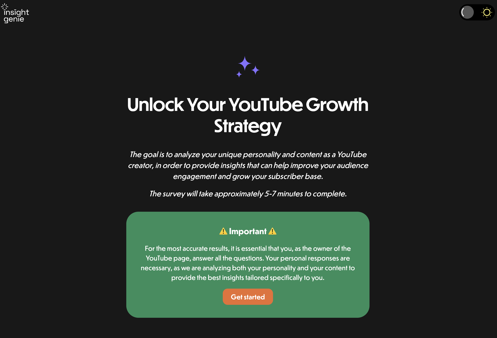
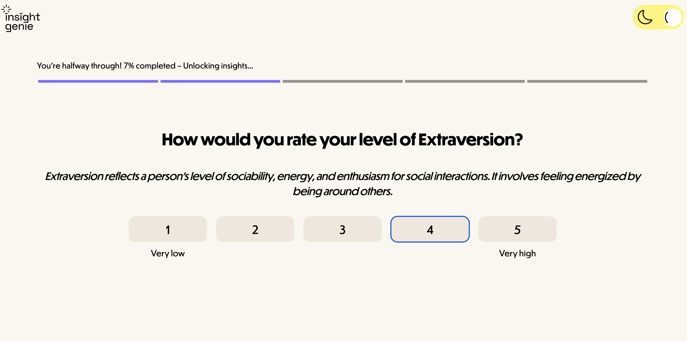
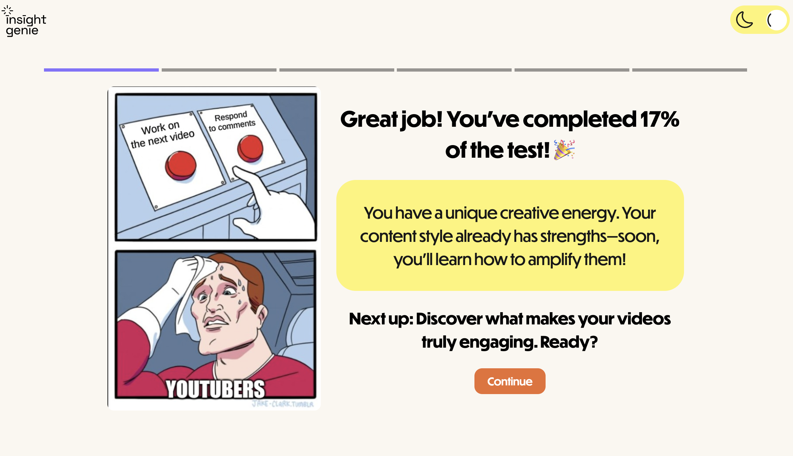
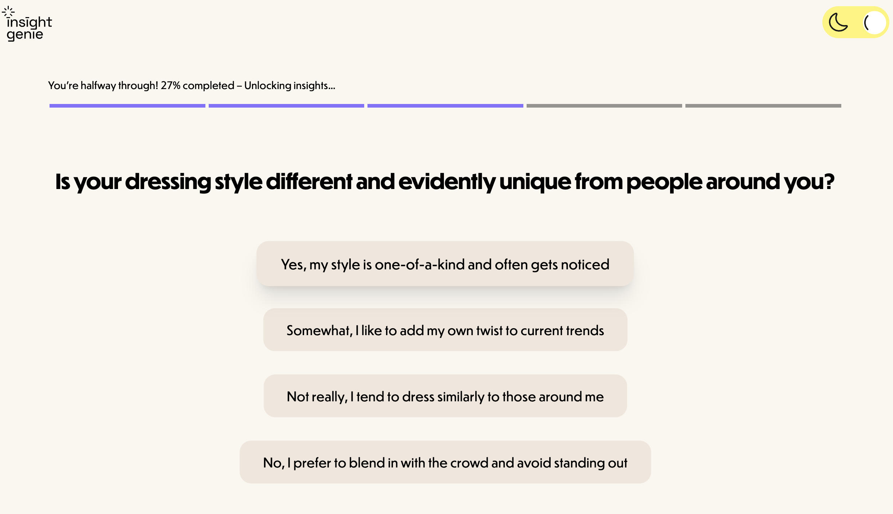
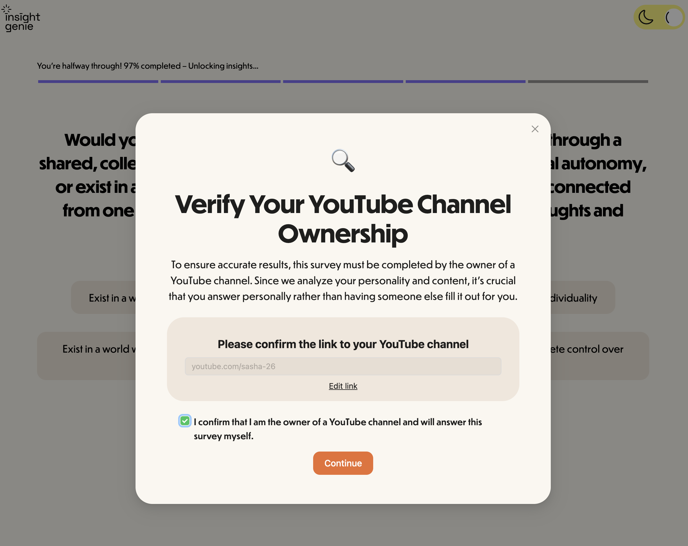
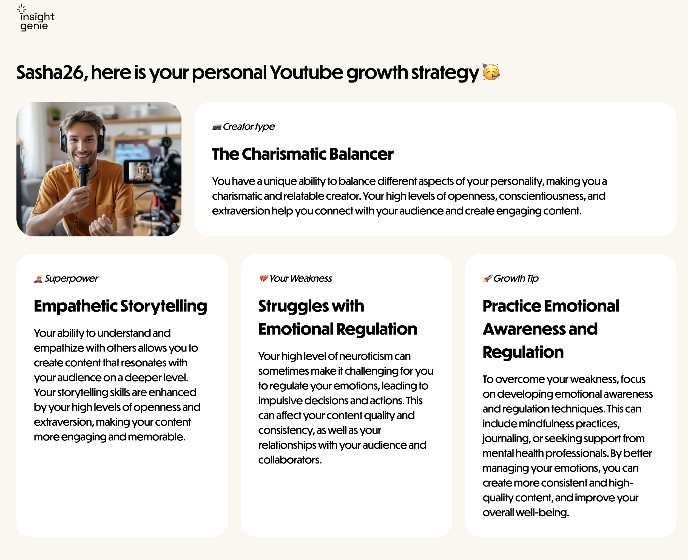

A full-stack web platform that assesses YouTube creators' personality types through a structured Big 5 personality survey and delivers AI-generated, personalised growth recommendations. Designed as a B2B tool for agencies or networks that manage YouTuber talent.






| Concern | Tool / Pattern |
|---|---|
| UI Framework | React 18 with hooks |
| Routing | React Router v6 — 4 routes |
| Server State | TanStack React Query |
| Client State | Redux Toolkit |
| HTTP Layer | Axios with interceptors |
| Styling | Tailwind CSS + Ant Design |
| Responsive | Custom breakpoints: mobile, tablet, desktop |
| Theme | Dark/light mode via Tailwind dark: + localStorage |
| Concern | Tool / Pattern |
|---|---|
| Runtime | Node.js 18+ with ES Modules |
| Database | MongoDB with Mongoose ODM |
| AI Integration | Groq Cloud (Llama 3.3 70B) |
| AWS SES via Nodemailer + EJS + DOMPurify | |
| Error Handling | Custom hierarchy with auto-logging and email alerts |
| Request Logging | MongoDB logging with browser fingerprinting |
| Rate Limiting | express-rate-limit (1000 req/hr) |
| Security | Input sanitisation, CORS, body size limit |
| Testing | Jest + mongodb-memory-server + Supertest |